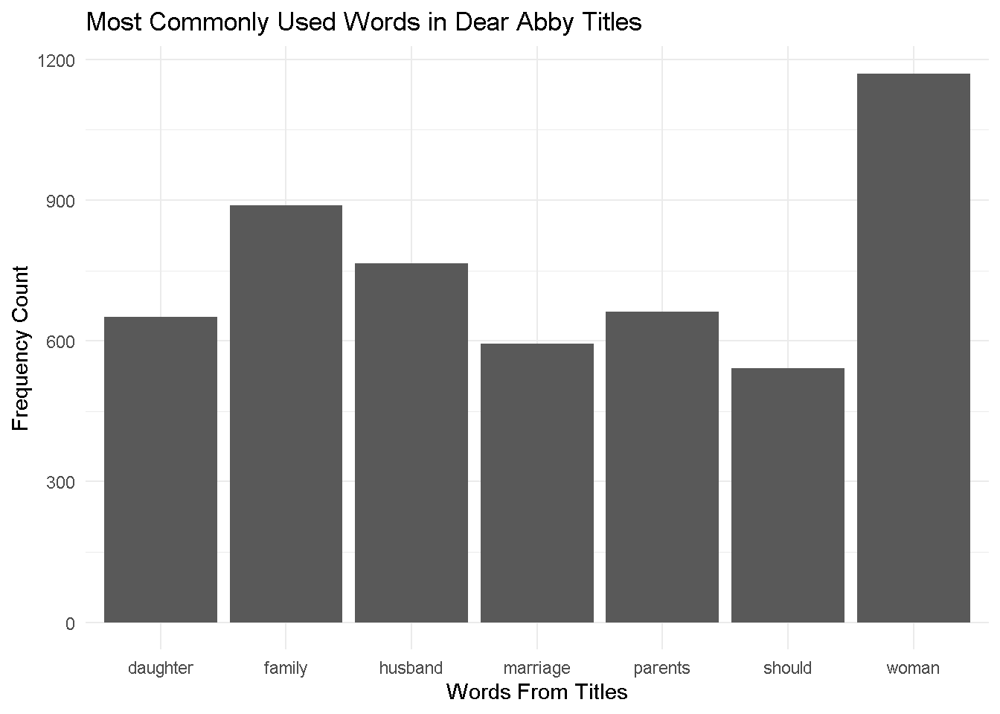
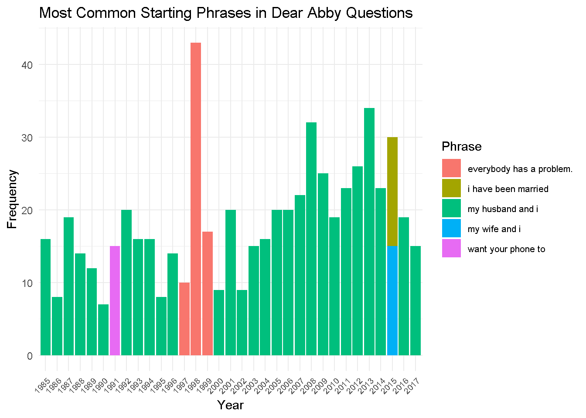

I am practicing my data science and regular expression skills by working with a bigger data set - and I plan on using regular expressions to quickly tidy up all of our data!
I will be analyzing the Dear Abby data set. I found this data set very interesting due to its annonymous nature, especially since it has existed long before internet threads were commonplace. I performed two analyses - one on the titles, and another on the questions themseles.
Here is where I retrieved my data: Blinderman, I., Ralph, C., & Samora, R. (2018). Dear Abby dataset: 30 years of American anxieties. The Pudding. Retrieved from https://pudding.cool/2018/11/dearabby/
library(tidyverse)library(ggplot2)library(stringr)library(tidytext)library(dplyr)library(tm)abby <-read_csv("https://raw.githubusercontent.com/the-pudding/data/master/dearabby/raw_da_qs.csv")# tokenize dear abby dataset - tidytext!tidyabby <- abby |>unnest_tokens(word, title)# create frequency dataframecount <- tidyabby|>count(word, sort =TRUE)# REGEX - remove all 3 letter wordscount <- count |>mutate(word =case_when(str_detect(word, "\\b\\w{1,4}\\b") ~str_remove_all(word, "\\b\\w{1,4}\\b"),TRUE~ word ))# REGEX - remove all punctuationcount <- count |>mutate(word =str_remove_all(word, "\\p{P}")) |>filter(word !="")#view(count)# create ggplotcount |>filter(n >540) |>ggplot() +geom_col(aes(x = word, y = n)) +labs(x ="Words From Titles",y ="Frequency Count",title ="Most Commonly Used Words in Dear Abby Titles" ) +theme_minimal()

For my first plot, I first created a frequency list across the entire title data set. Using the most frequent words, I then filtered by the top 10 (I performed several regex operations to get rid of common English filler words). From the graph, you can see the common theme of family, marriage, and children as very prominent sources of anxiety features in Dear Abby. I also believe “should” is a very essential word, as it highlights the important question of not knowing what to do - i.e. the reader’s relationship coming to Abby for advice. In the data set’s documentation, they mention that about 70% of Dear Abby readers are women, which I think might explain the high frequency in the word ‘Woman’, though this is just my best guess.
For my next plot, I wanted to take the year value into account to try and note a change over time within Dear Abby questions. I performed less string processing and simply captured the initial parts of the questions themselves, and then created a frequency list from that data.
library(tidyverse)library(ggplot2)library(stringr)library(tidytext)library(dplyr)library(tm)# downloading the datasetabby <-read_csv("https://raw.githubusercontent.com/the-pudding/data/master/dearabby/raw_da_qs.csv")# REGEX - Filter out questions to include just the first 4 wordsabby <- abby |>mutate(question_only =str_extract(question_only, "^(?:\\S+\\s+){0,3}\\S+"))#head(abby$question_only)# Count the most used questions by yearword_count_by_year <- abby |>group_by(year, question_only) |># Group by year and question_onlysummarise(count =n(), .groups ="drop") |># Count occurrencesarrange(year, desc(count)) # Arrange by year and count# Get the most common phrase for each yearword_count_by_year <- word_count_by_year %>%group_by(year) %>%slice_max(order_by = count, n =1, with_ties =TRUE) # Get the top phrase# gg plot, with specefic label alteration (the year labels were harder to see!!word_count_by_year |>ggplot(aes(x =factor(year), y = count, fill = question_only)) +geom_col() +labs(x ="Year",y ="Frequency",title ="Most Common Starting Phrases in Dear Abby Questions" ) +theme_minimal() +theme(axis.text.x =element_text(angle =45, hjust =1, size =7), # Smaller x-axis labelslegend.text =element_text(size =8)) +# Optional: smaller legend textscale_fill_discrete(name ="Phrase")

This plot is dominated by “my husband and i” across most of Dear Abby’s history. While the topics and questions across the decades most definitely change, I think this plot highlights that the core of reader’s anxieties always involve marriage. Interestingly, 1991 was impacted by a specific phrase attached to many questions, which I believe could have been solved with stronger regex filtering. 2015 also showed a tie between two phrases, both of which still circle marriage. Before starting this project, I wanted to gain insight into US culture. I honestly had no idea how important marriage was to the US, and I think I have a better idea of how love continues to circulate in people’s lives as they get older (and how much advice people need to make it run smooth!).